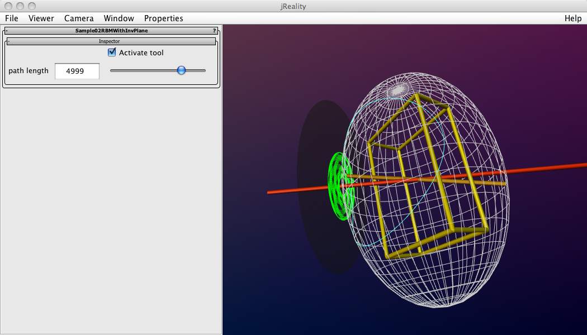

Author: Charles Gunn, gunn@math.tu-berlin.de
First-time users: See this introduction to the visualization platform.
The Euler top is the simplest thinkable rigid body motion in space: a motion of a body whose center of mass remains fixed, and in which no external forces are active. This simulation allows the user to explore this seemingly simple configuration, which despite its simplicity demonstrates quite complicated behavior.
We give below a very abbreviated account of the principles of the Euler top. See a textbook like Arnold, Classical Methods of Mathematical Physics, Ch. 6, for a real account.
When the program starts up, it should appear roughly as in the picture below. A rigid body (the yellow wire-frame box) is also represented by its inertial ellipsoid (a wire-frame sphere). By clicking in dragging in the graphics window, you can activate the rigid body simulation for this box. As long as you hold down the mouse, the object rotates normally. Upon release of the mouse, the program calculates the instantaneous velocity of the object and uses that plus the inertia tensor of the object to calculate the momentum of the body. This momentum "line" then remains constant for the subsequent motion, but as the body moves, the angular velocity changes, in such a way that the kinetic energy of the motion remains constant. Note: if the mouse is over the transparent disk when click, the rigid body simulator is not activated, only a normal rotation.
As the body rotates, the angular velocity traces out a blue curve on the surface of the inertia ellipsoid, the so-called polhode of the motion. This is a quartic curve that is the intersection of two oval quadrics, one determined by the conservation of momentum, and one by the conservation of energy. The theory of the Euler top, due to Poinsot, asserts that this blue curve (which is in the body coordinate system), when considered in the space coordinate system, moves in a plane perpendicular to the momentum line, the so-called invariant plane. The curve that lies in the invariant plane is the herpolhode, and is shown in green. This green curve is almost periodic; it moves between two circles in the invariant plane centered on the momentum line. The green curve is created from the blue one by the point of contact as the inertial ellipsoid rolls on the invariant plane.
The user can start the simulation with another initial condition at any time by repeating the process outlined above, taking care not to click over the transparent disk representing the invariant plane. Clicking and dragging over this disk can be used to allow the simulation to continue, while adjusting the position of the whole configuration in space. Or, the user can deactivate the tool in the left-hand panel (see below); this then removes the "physics" tool.

There is a context menu accessible via right mouse press. The controls accessible from this menu include: